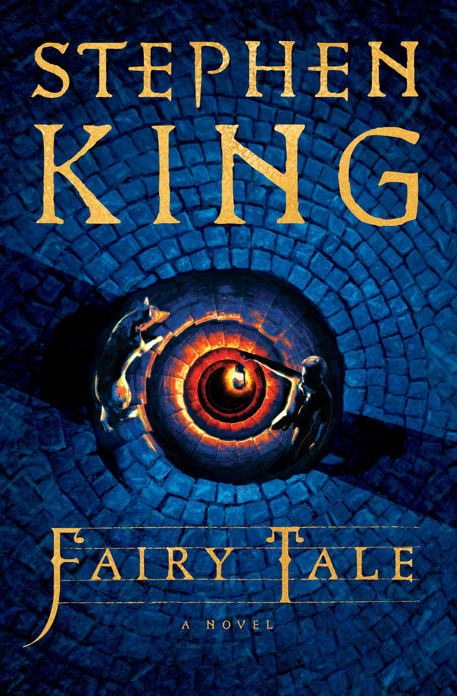

Una Historia de Amor
No es cualquier libro, es nuestro libro
Ya que nos encantan los libros, porque no hacer un libro de nuestra propia historia?
Un libro lleno de recuerdos, aventuras y momentos inolvidables.
dÃas de amor, y nuestra historia sigue escribiéndose... ❤️
3
📖 Prólogo
Un cuento para dormir...
Prologo
Érase una vez, en un reino muy especial, una pequeña princesa pollito. TenÃa plumas doradas como el sol y un corazón lleno de luz. VivÃa en un castillo de nubes, rodeada de sueños y estrellas, pero en su interior, a veces sentÃa que algo le faltaba… En lo más profundo de la tierra, en un rincón escondido del bosque, vivÃa un valiente topito caballero. No tenÃa una armadura brillante, pero su corazón era fuerte, y sus patas habÃan cavado caminos que nadie más habÃa explorado. Mientras otros caballeros buscaban espadas y reinos por conquistar, él buscaba algo más grande: un propósito, un destino. Un dÃa, una tormenta inesperada envolvió el cielo del castillo de la princesa pollito. Los vientos la arrastraron lejos, hasta lo más oscuro del bosque. Asustada y perdida, trató de encontrar su camino de regreso, pero la noche era frÃa y desconocida. Fue entonces cuando el topito, que siempre escuchaba los secretos de la tierra, oyó un susurro diferente. Algo en su corazón le dijo que alguien especial necesitaba su ayuda. Con valentÃa, siguió el eco de su instinto, cavando y corriendo entre raÃces y piedras, hasta que finalmente la encontró: la princesa pollito temblaba bajo la luz de la luna.7
Prologo
—¿Quién eres? —preguntó la princesa, con sus ojitos llenos de asombro. —Soy solo un topito —respondió él con una sonrisa—, pero puedo llevarte a casa. Y asÃ, con su pequeña pero firme determinación, el topito caballero guió a la princesa pollito a través de senderos secretos, protegiéndola del frÃo y mostrándole la belleza del mundo que él conocÃa. Cuando finalmente llegaron al castillo, la princesa miró a su valiente rescatador y supo que nunca querrÃa alejarse de él. Porque más allá de las armaduras y los tÃtulos, lo que realmente hace a un caballero es su corazón. Desde aquel dÃa, el topito caballero y la princesa pollito vivieron juntos muchas aventuras, demostrando que el amor verdadero no necesita castillos ni coronas, sino solo dos corazones dispuestos a cuidarse el uno al otro… por siempre. ❤️ Pollito y Topito, para siempre. ❤️8
💕 Cómo nos conocimos
Ahora contaré nuestra verdadera historia...
Cómo nos conocimos
Nos conocimos hace años gracias a Andrea, pero realmente todo comenzó en primer año de la universidad. Un dÃa cualquiera, mientras bajábamos las gradas hacia la cafeterÃa, nos cruzamos, nos reconocimos al instante y nos saludamos como si ya nos conociéramos de siempre. A partir de ahÃ, cada vez que nos veÃamos en la U, nos saludábamos con la misma familiaridad, sin imaginar que eventualmente nuestras vidas se iban a cruzar de otra manera. Un tiempo después, coincidimos en una fiesta en carretera que resultó ser un fracaso total. No habÃa ambiente, la música no ayudaba y simplemente no tenÃa sentido quedarnos ahÃ. Asà que decidimos irnos a otra fiesta, sin mucho plan, solo buscando algo mejor. Esa salida terminó siendo el inicio de chupiamigos, donde empezamos a llevarnos más, sin complicaciones ni expectativas.10
Cómo nos conocimos
Siempre me pareciste atractiva, pero en ese momento tenÃas novio y simplemente éramos amigos. Aun asÃ, con el tiempo, las cosas fueron cambiando y, como era de esperarse, hubo algunos tropiezos en el camino (lo que más tarde llamarÃamos el cagadal). A pesar de eso, logramos que todo volviera a la normalidad y las cosas siguieron fluyendo. Eventualmente, llegó el momento de hablar las cosas con más claridad. En ese entonces, yo no querÃa algo serio, lo que inevitablemente llevó a otro tropiezo. Pero, después de un tiempo y otra conversación, decidimos hacer las cosas exclusivas y ver a dónde nos llevaba. Lo que eventualmente nos llevó a un 18 de marzo de 2023, cuando después de un par de intentos fallidos, finalmente logré llevarte a Green Rush para hacer un picnic. AhÃ, por fin encontré la oportunidad (no sabes lo nervioso que estaba y lo fuerte que me latÃa el corazón) de pedirte que fueras mi novia. ❤️ Y el resto, pues, es nuestra historia... ❤️11
📷 Primeras fotos juntos
Nuestros primeros momentos como novios...

Primeras fotos juntos
Nuestras primeras fiestas como novios.


13
🌟 Nuestros momentos favoritos
Recuerdos que nos hacen sonreÃr...

Nuestros momentos favoritos
Nuestros momentos favoritos, desde el primer dÃa que nos vimos hasta el dÃa de hoy.- El ratoncito en moto original ğŸ
- La época de aleros 🍾
- La vez esa que me tire un erupto en plena acción 😬
- Tu entrenandome para reconocer la voz de los de One Direction 🎤
- Nuestro club de lectura y todos los libros que leemos juntos 📚
- Las fiestas que pasamos juntos 🎉
- Las partidas de Mario Kart 🎮
- Siempre que cometemos Gula con sushiito 🍣
- Las movies que hemos visto juntos 🎥
- Lo bien que la pasamos en loops ⛸
- Nuestro album de fotos 📸
- La canción de bowser (se me habia olvidado eso) 😈
- Los pasos de peso pluma 🪶
15
📚 Libros favoritos
Libros que nos hicieron sentir...
Libros favoritos
Algunos de los libros favoritos de nuestro book club.



❤️ Historias que nos atraparon ❤️
17
🬠Peliculas que nos hicieron llorar
Peliculas especiales...

Peliculas que nos hicieron llorar
Peliculas que fueron una montaña rusa de emociones.
19
🶠Canciones que nos definen
Nuestras canciones...

Canciones que nos definen
Yo se que no son muchas.... Por eso cree nuestra propia playlist en Spotify para agregar canciones especiales.
21
🆠Logros
Metas que hemos alcanzado...

Logros
Metas que hemos cumplido (por ahora).

23
🌠Viajes y aventuras
Nuestros viajes juntos...

Viajes y aventuras
Momentos lindos que hemos compartido en lugares lindos.


25
💬 Frases que nos identifican
Cosas que solo nosotros entendemos...
Frases que nos identifican
Frases originales que han surgido en la relación.- “El amorcito.†ğŸ˜
- “El topito.†😂
- “Ratoncito en moto.†ğŸ
- “Guapiii Trapiii.†ğŸ˜
- “Te voy a trapear.†😡
- “La farmacia especial.†🤷ğŸ¼â€â™‚ï¸
- *Javi habla en niñito* 👶🏻
- “10 segundos de cosquillas, levanta la mano.†😤
- *Procede a darle una nalgaduita* 😼
- “Te trueno espaldita?†😊
- “Me haces masajito?†ğŸ˜
- *Un minuto después* “Ya termino masajito.†🥲
- "Todo rascuache.†🥴
- “El chulon.†🙈
27
📸 Fotos especiales
Nuestras fotos favoritas...
Fotos especiales
Algunas de las fotos que nos han hecho sonreÃr.


29
🃠Disfraces de Halloween
Los mejores couple costumes...

Disfraces de Halloween
No es que no me guste disfrazarme, en realidad si me gusta disfrazarme contigo. Solo me da huevita buscar el disfraz perfecto jaja.


31
💌 Cartas de amor
Cartas y poemas...
Cartas de amor
Lastimosamente, no puedo recuperar las cartas escritas a mano, pero aquà están las cartitas digitales que te he hecho… y espero escribirte muchas más. ❤️ -Con amor, Topito. ❤️33
💕 Recordemos el primer aniversario
Como pasa el tiempo...
Recordemos el primer aniversario
Y pensar que hace un año estábamos celebrando nuestro primer aniversario… Un año lleno de risas, aventuras y momentos inolvidables.

35
😠Girlfriend Appreciation Chapter
Porque tengo la mejor novia del mundo...

Girlfriend Appreciation Chapter
Mi persona favorita. No hay suficientes palabras para describir lo increÃble que eres. Eres la más linda, tierna y guapa, pero también la más inteligente, divertida y especial. Desde el primer dÃa has sido un motivo de alegrÃa en mi vida, y cada momento a tu lado solo me confirma lo afortunado que soy de tenerte. Admiro tu forma de ser, tu bondad, tu paciencia y la manera en que haces que todo sea mejor con solo estar ahÃ.

37
👩🏼‍❤️‍👨🏼 Nuestra familia
Una gran familia feliz...
Nuestra familia
Sin duda tenemos la mejor familia del mundo.39
✨ EpÃlogo
Nuestro amor sigue escribiéndose...
EpÃlogo
Y esa es la historia de la princesa pollito y el topito... La Princesa Pollito, que un dÃa creyó necesitar ser rescatada, encontró en el Topito no solo a su caballero de brillante armadura, sino también a su compañero de vida. Y el Topito, que pensó que solo estaba destinado a proteger, descubrió que en los ojos del Pollito estaba su hogar. Juntos construyeron un amor que creció con cada aventura, con cada risa y con cada promesa cumplida. Dos años después, se dieron cuenta de que no era suficiente… porque un amor como el suyo nunca lo será. Siempre querrán más: más dÃas juntos, más amaneceres compartidos, más historias por escribir. Y asÃ, sin un punto final, su cuento de hadas sigue, porque el Pollito y el Topito están destinados a amarse por siempre. ❤️ Pollito y Topito, para siempre. ❤️41
EpÃlogo
Y colorÃn colorado... Este cuento... No se ha acabado... Nuestro amor sigue escribiéndose... ❤️ Y seguiremos escribiendolo para siempre. ❤️42
Te amo. Vamos por mas... ~ Topito ❤️